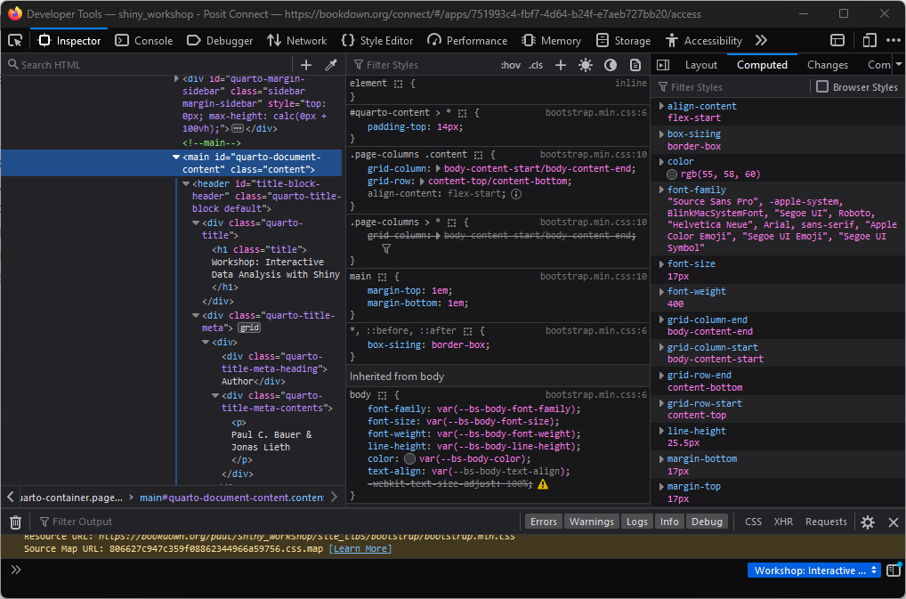
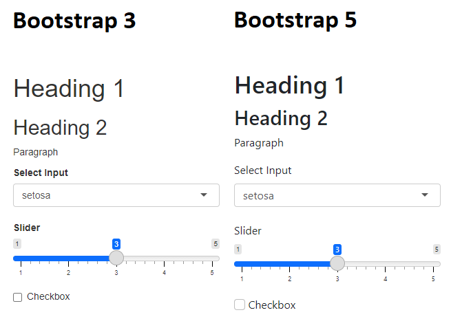
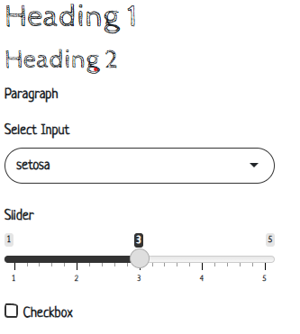
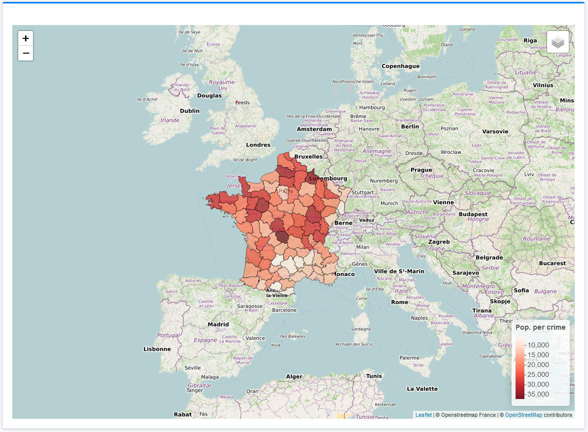
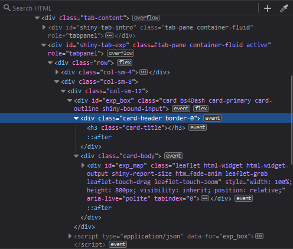

library(bs4Dash)
# UI ----
ui <- dashboardPage(title = "My Shiny App",
### Header ----
header = dashboardHeader(),
### Sidebar ----
sidebar = dashboardSidebar(),
### Body ----
body = dashboardBody(
h2("A NEW HOPE", align = "center"),
h5("It is a period of civil war.", align = "center"),
p("p creates a paragraph of text."),
tags$p("A new p() command starts a new paragraph. Supply a style attribute to change the format of the entire paragraph.", style = "font-family: 'times'; font-si16pt"),
strong("strong() makes bold text."),
em("em() creates italicized (i.e, emphasized) text."),
tags$hr(style="border-color:black;"),
tags$br(),
tags$line(),
br(),
code("code displays your text similar to computer code"),
div("div creates segments of text with a similar style. This division of text is all blue because I passed the argument 'style = color:blue' to div", style = "color:blue"),
br(),
p("span does the same thing as div, but it works with",
span("groups of words", style = "color:blue"),
"that appear inside a paragraph."))
)
# Server ----
server <- function(input, output, session) {}
shinyApp(ui, server)Theming & styling
You will learn how to:
- Apply global themes to your Shiny app
- Use the “Inspect” tool to your advantage
- Add visual feedback during loading times
- Supplement basic CSS to do what R cannot
1 Theming in Shiny
- Shiny apps look a bit lackluster by default - but why is that?
- Shiny is based on a raw form of Bootstrap by default
1.1 Bootstrap
- Bootstrap is a framework containing design templates that are based on CSS, HTML and JavaScript
- Used by around 20% of websites
- One of the most popular GitHub projects
- Possibly a bit boring due to its popularity
- Classic Shiny uses Bootstrap 3
bs4Dash, the package we use for the Guerry dashboard, uses Bootstrap 4 (more precisely AdminLTE 3)
1.2 Shiny extensions for styling
- Shiny has some really cool extensions for amping up your UI, some of which we will address:
bslib- customize bootstrap themesfresh- customize dashboard themeswaiter- create pretty spinnersshinyWidgets- beautify input widgetsshinyjs- do JavaScript magic without knowing JavaScript
1.3 Further reading
- Chapter 6 of Hadley Wickham’s “Mastering Shiny”
- Chapter 6 to 9 of David Granjon’s “Outstanding User Interfaces with Shiny”
3 Inspect tool
- Most major browsers offer an “Inspect” tool for websites
- Lets you manipulate single HTML elements in real time (HTML pane)
- Lets you change the CSS styling of a website in real time (CSS pane)
- Lets you change the layout of a website in real time (Layout pane)
- Provides an interface to visualize where HTML elements are located on a website (“Pick an element”)
- Lets you extract colors directly from a website (“Grab a color”)
3.1 How to open the inspector
- Visit a website (e.g. your Shiny app in a browser)
- Right click somewhere (e.g. an element you want to inspect)
- Select “Inspect”
- A window will open that looks just like the one below
Tip
Also works in RStudio! Right click somewhere, then “Inspect Element”

3.2 Exploring the inspector
- Question: From the list above, can you make out which part of the inspector does what?
- HTML pane
- CSS pane
- Layout pane
- Pick an element
- Grab a color
- Despite the complicated look, the Inspect tool can be useful for all kinds of theming endeavours
4 Theming with bslib
- The
bslibpackage can be used to control the bootstrap theme configuration - Bootstrap themes can be specified using the
bs_theme()function - In Shiny, we can plug
bs_themes in page layout such asfillPage()orfluidPage()
4.1 Bootstrap versions with bslib
- In the following code chunk, we create a bootstrap theme that applies the theming of the most recent Bootstrap 5 version:
ui <- fluidPage(
h1("Heading 1"),
h2("Heading 2"),
p("Paragraph"),
selectInput("select", "Select Input", unique(iris$Species)),
sliderInput("slider", label = "Slider", 1, 5, 3),
checkboxInput("check", "Checkbox"),
theme = bs_theme(version = 5)
)
server <- function(input, output, session) {}
shinyApp(ui, server)- The differences to the classic bootstrap 3 are small but noticeable!

4.2 Bootswatch
- Other than the version, there’s a lot to change in
bs_theme() - For example, we can apply one of the pre-made Bootswatch themes:
ui <- fluidPage(
h1("Heading 1"),
h2("Heading 2"),
p("Paragraph"),
selectInput("select", "Select Input", unique(iris$Species)),
sliderInput("slider", label = "Slider", 1, 5, 3),
checkboxInput("check", "Checkbox"),
theme = bs_theme(version = 5, bootswatch = "sketchy")
)
server <- function(input, output, session) {}
shinyApp(ui, server)
4.3 Exploring theming options
- You can try out all theming options in real time by running
bs_theme_preview()
Exercise
Experiment with bs_theme_preview() to learn about the different arguments to bs_theme(). When you find a pretty theme, re-create the theme programmatically using bs_theme()
Tip
The code to update the theme including all arguments is printed to the console!
5 Theming with fresh
freshis an R package that can be used to theme, besides classic Shiny, dashboards likeshinydashboardandbs4Dashbs4Dashcan easily be themed using thefreshpackage
5.1 Adding a GESIS-like theme
- Workflow:
- Create a theme using
fresh::create_theme() - Add theming elements, such as layout, colors, fonts
- Pass the theme object as an argument to
dashboardPage()
- Create a theme using
- In the following code chunk, we add a theme that roughly resembles the GESIS web style
Tip
Type fresh::bs4dash_ in the RStudio console and explore fresh’s theming elements
dash_theme <- create_theme(
bs4dash_status(
primary = "#58748f",
secondary = "#666666",
info = "#E6EAEE",
danger = "#BF616A",
warning = "#F06400",
light = "#F4F4F2",
dark = "#2c2c25"
),
bs4dash_layout(
font_size_root = "5rem",
main_bg = "#FDFDFD",
sidebar_width = "350px"
),
bs4dash_sidebar_light(bg = "#F4F4F2", color = "#000"),
bs4dash_sidebar_dark(bg = "#2c2c25", color = "#FFF"),
bs4dash_color(
orange = "#F06400",
white = "#E6EAEE",
black = "#000",
gray_600 = "#666",
gray_800 = "#333",
gray_900 = "#000",
blue = "#58748f"
),
bs4dash_font(
family_sans_serif = "Verdana",
family_base = "Georgia",
family_monospace = "Courier New"
)
)
Exercise
Using the pipette tool from the Inspector, extract the color scheme from a website of your choice. Create a theme using the respective colors (and other theming elements) and pass it to your Shiny dashboard.
6 Spinners
- A lack of feedback in graphical user interfaces can lead to frustration
- In such cases, spinners can be an elegant solution
- There are many Shiny extensions that support spinners:
shinycssloaders,shinybusy,waiter
6.0.1 Startup spinners with waiter
bs4Dashandwaiterwork particularly well together:- Call
tags$head(use_waiter())at the beginning ofdashboardBody - Assemble a preloader and pass it as an argument to the
dashboardPage
- Call
Tip
You can preview what spinners look like through the preview_spinner() function or by visiting https://jslth.shinyapps.io/waiter-gallery/
7 Custom styling
- Shiny apps can look good without a single line of non-R code
- However, to give an app the final touch, it’s hard to get around CSS
- Not least, Shiny apps are built using HTML, CSS and JavaScript, so it’s naturally a good idea to know the essentials
- The
bs4Dash::box()applies a lot of styling behind the scenes and we can inspect what exactly is happening by printing its returned object:
<div class="col-sm-6">
<div class="card bs4Dash">
<div class="card-header">
<h3 class="card-title"></h3>
<div class="card-tools float-right">
<button class="btn btn-tool btn-sm" type="button" data-card-widget="collapse">
<i class="fas fa-minus" role="presentation" aria-label="minus icon"></i>
</button>
</div>
</div>
<div class="card-body"></div>
</div>
<script type="application/json">{"solidHeader":true,"width":6,"collapsible":true,"closable":false,"maximizable":false,"gradient":false}</script>
</div>7.1 CSS
- CSS (Cascading Style Sheets) is a computer language that is used to style HTML documents
- HTML provides the containers, CSS styles them
- We can write HTML and CSS easily from within R using the
htmltoolspackage (see?builderand?browsable)
browsable(div(
div(
"This is an HTML container without styling"
),
div(
"This is an HTML container with CSS styling",
style = "
background-color: green;
color: white;
border-radius: 10px;
display: inline-block;
padding: 5px;
transform: rotate(5deg);
margin-top: 15px;
font-family: Verdana;
"
)
))This is an HTML container without styling
This is an HTML container with CSS styling
7.2 Classes and IDs
- CSS is usually defined using classes or IDs
- IDs are unique identifiers for a single UI elements and are specified using a hashtag
# - Classes can be given to multiple UI elements and are specified using a dot
.
- IDs are unique identifiers for a single UI elements and are specified using a hashtag
7.3 HTML elements and CSS
- You can change CSS properties of entire HTML elements as well:
browsable(div(
tags$style(
"
p.cls {
color: blue;
}
"
),
p("Blue his house", class = "cls"),
p("With a blue little window", class = "cls"),
p("And a blue corvette", class = "cls"),
div("Green??", class = "cls"),
style = "border-style: dotted; display: inline-block;"
))Blue his house
With a blue little window
And a blue corvette
Green??
- Question: Why is
div.clsgreen and not blue or black? - Combining the knowledge from above:
p.clschanges the properties of allptags with classcls#id .clschanges the properties of all elements with classclswithin an element of IDid
7.3.1 CSS properties
- CSS is build entirely upon so-called properties
- A complete reference of CSS can be found in the Mozilla developer docs
| Property | Description | Example values |
|---|---|---|
color |
Sets the color of an element | #000, black |
background-color |
Sets the color of the element background | #000, black |
display |
Determines how the element is displayed | inline, block, flex, grid |
width |
Sets the width of an element | 10px, 100%, 2em, 1vh |
height |
Sets the height of an element | 10px, 100%, 2em, 1vh |
margin |
Margin between element and parent | 10px, 100%, 2em, 1vh |
padding |
Margin within element | 10px, 100%, 2em, 1vh |
border-color |
Sets the color of an element border | #000, black |
border-width |
Sets the width of an element border | 10px, 100%, 2em, 1vh |
border-style |
Sets the style of an element border | dotted, dashed, solid, double |
border-radius |
Sets smooth corners | 10px, 100%, 2em, 1vh |
font-family |
Sets the font family | Arial, Verdana |
font-style |
Sets the font style | Normal, italic, oblique |
font-weight |
Sets the font boldness | normal, bold, 700 |
font-size |
Sets the font size | 10px, 100%, 2em, 1vh |
position |
Determines the general positioning of an element | Absolute, relative, fixed |
z-index |
Sets the overlapping order | Ranking, i.e. 1000 > 1 > 0 > -1 |
7.4 Including CSS in R
- CSS can either be defined using inline CSS (
tags$style) or an external CSS file - In the Guerry app, we include a CSS file which takes care of some styling:
- Add a folder called “www” in your app directory
- Add a file called “styles.css” to that folder
- In R, add:
tags$head(includeCSS("www/styles.css"))to thedashboardBody
7.5 Example: Removing white space
- During session 6: mapping, you might have noticed a large amount of white space when making the Leaflet map
- Not a tragedy, but we lose quite a lot of functional space

7.5.1 Diagnosis
- Cause:
bs4Dash::box()reserves some space in its header and body for some reason - How do we know?
- Right click on the white space
- Open the inspector
- Look out for the properties “padding” or “margin”, usually the culprits in terms of white space
- Disable them to see what changes

7.5.2 Fix
- Bad news: We can’t fix this using R alone as the values are given by AdminLTE,
bs4Dash’s CSS framework - Good news: This is a really nice use case for custom CSS styling
- Using the Inspect tool, we add
padding: 0px;to both the box header and body directly

7.5.3 Permanent fix
- Our fix with the Inspect tool is lost as soon as we close or reload the tab
- To fix the padding permanently, we need to make changes to the HTML class
- Question: What HTML class do we need to amend? Which HTML element is responsible for the faulty white space?
Tip
If you are not sure what element does what, try to hover over the element in the HTML pane. The respective space is then highlighted directly on the website!

7.5.4 Embedding CSS
- Now that we know what properties to change and where, we can start writing CSS
- Either in a dedicated
styles.cssfile or usingtags$styleinside the UI code, we put the following CSS lines:
styles.css
- In other words: For the class
card-headerandcard-bodyinside the object with IDexp_box, set the padding to 0 pixels
Exercise
Change the CSS styling of the text paragraphs in the Home tab. Create a CSS class called par and change font family, size, weight, type, alignment and justification
Tip
Some of the CSS properties were introduced in subsection “CSS properties”, but others are new. In any case, there are a lot of good resources just one Google search away.
Solution
Either in styles.css or inline, add the following CSS code:
/* text formatting */
p.par {
font-family: Arial;
font-weight: 500;
font-size: 12px;
font-type: italic;
text-indent: 10px;
text-align: justify;
text-justify: inter-word;
}In R, you need to add the class par to all paragraphs in the UI tab: